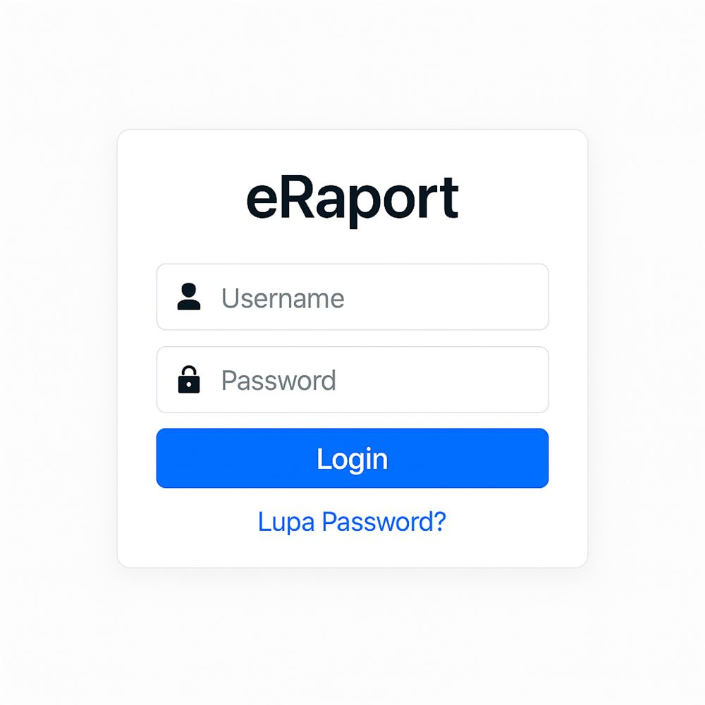

FEATURED • EDTECH

PROJECT // 01
E-Raport Management System
An enterprise academic governance and digital grading platform engineered for vocational schools. Automates weighted score calculations, multi-role workflows (Admin, Teachers, Homeroom Advisors, Students), and compliant PDF report generation with zero calculation errors.